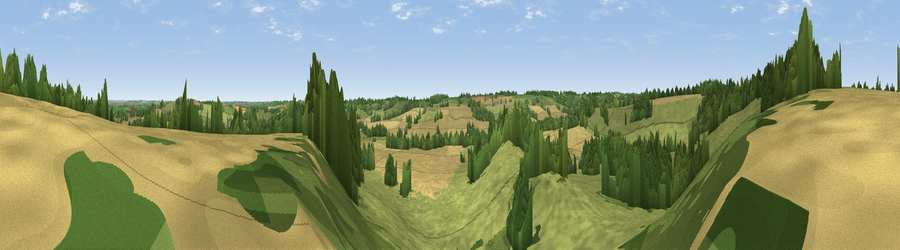

Viewpoint near Barford St Michael
#32402 in England · top 65% of its area beats it · near Barford St MichaelThe view, rendered

A 360° render of this exact spot computed from the terrain model, tree cover and land cover — summer colours, afternoon light, calibrated against photographs of famous viewpoints. Real trees, hedges and buildings will differ in detail.
The panorama
Grey silhouette: terrain skyline in each direction (720 bearings, Earth curvature and refraction included). Dashed green: skyline with trees (+15 m) and buildings (+8 m) as obstacles. Blue strip: how far the ground is visible on each bearing.
Where the view opens
Wedge length = distance to the farthest visible ground on that bearing (vegetation-aware). Rings at 10, 25 and 50 km.
What fills the view
55% grassland · 24% cropland · 20% woodland
Angular shares of the visible panorama (visual magnitude), not map area. Landscape diversity 0.44 (0–1 Shannon).
Key numbers
More beautiful places nearby
The staircase of upgrades: each row has a higher view potential than everything closer. Driving times are estimates from straight-line distance, calibrated against real road routing — check an actual route before setting out.
| Place | Direction | Drive | Score |
|---|---|---|---|
| Viewpoint near South Newington | N · 1 km | ~2 min | 45.1 |
| Viewpoint near Milcombe | NNW · 4 km | ~10 min | 49.2 |
| Crouch Hill | NNE · 9 km | ~17 min | 55.6 |
| Viewpoint near Whichford | WNW · 9 km | ~18 min | 57.8 |
| Epwell Hill | NNW · 12 km | ~23 min | 60.6 |
| Shenlow Hill | NNW · 13 km | ~24 min | 65.9 |
| Viewpoint near Upper Tysoe | NW · 13 km | ~24 min | 70.4 |
| Viewpoint near Radway | N · 18 km | ~31 min | 71.7 |
51.97658, -1.39395 · source: screening · position refined by local search. Computed location — check access rights before visiting.